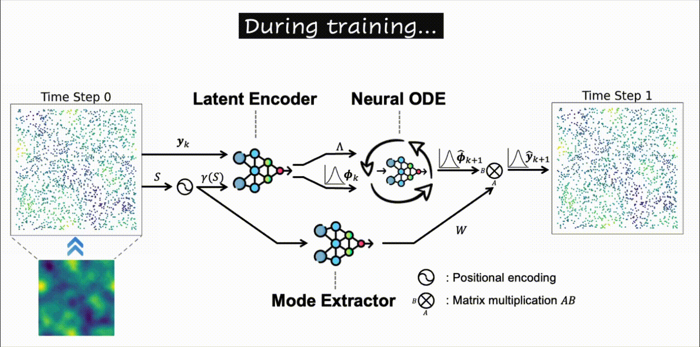
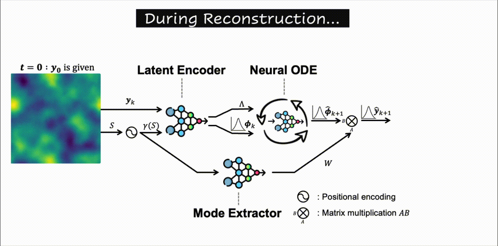
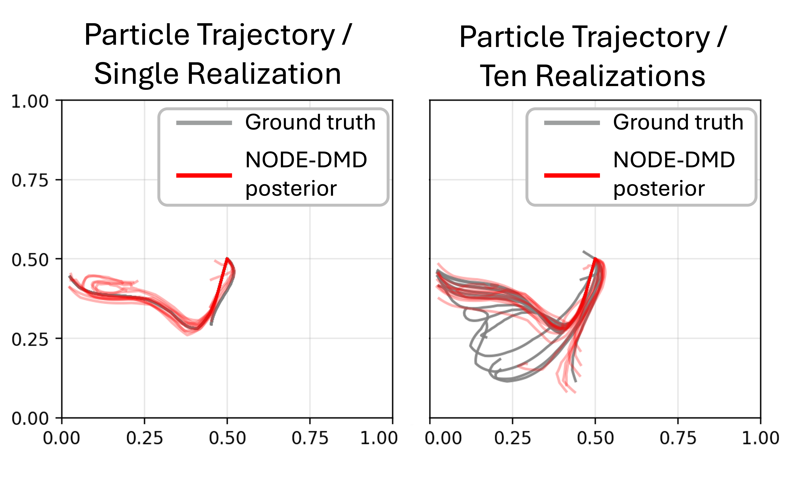

\(\textbf{Stochastic NODE-DMD} \) is a probabilistic spectral analysis of nonlinear dynamics from sparse observations.

Abstract
Many consequential real-world systems, like wind fields and ocean currents, are dynamic and hard to model. Learning their governing dynamics remains a central challenge in scientific machine learning. Dynamic Mode Decomposition (DMD) provides a simple, data-driven approximation, but practical use is limited by sparse/noisy observations from continuous fields, reliance on linear approximations, and the lack of principled uncertainty quantification. To address these issues, we introduce Stochastic NODE--DMD, a probabilistic extension of DMD that models continuous-time, nonlinear dynamics while remaining interpretable. Our approach enables continuous spatiotemporal reconstruction at arbitrary coordinates and quantifies predictive uncertainty. Across four benchmarks, a synthetic setting and three physics-based flows, it surpasses a baseline in reconstruction accuracy when trained from only 10\% observation density. It further recovers the dynamical structure by aligning learned modes and continuous-time eigenvalues with ground truth. Finally, on datasets with multiple realizations, our method learns a calibrated distribution over latent dynamics that preserves ensemble variability rather than averaging across regimes.
Training Phase
During training, Stochastic NODE–DMD learns a three-part model that reconstructs
spatiotemporal dynamics from sparse observations. First, the
Latent Encoder takes subsampled measurements at time step k and produces a
probabilistic latent state together with the continuous-time eigenvalues that govern temporal dynamics of the system.
Next, a Stochastic Neural ODE evolves this latent distribution forward to time k+1, capturing both
nonlinear residual dynamics and uncertainty. Finally, the
Mode Extractor learns basis spatial patterns as a continuous implicit representation, enabling
reconstruction on arbitrary spatial coordinates.
We train the model using only 10% of fixed datapoints from the ground-truth field. This structure yields an interpretable, uncertainty-aware
model that remains stable over long horizons and accurately captures the underlying spatiotemporal patterns.

Inference Phase
At inference time, Stochastic NODE–DMD can generate field predictions
at any spatial coordinate, including full-resolution grids unseen during training.
By evolving the latent state with the learned stochastic ODE, the model provides both a point estimate
and an uncertainty distribution that reflect noise, subsampling, and variability across realizations.
Reconstruction can be performed either in a single step or autoregressively over long horizons.
Importantly, only the initial state is needed to roll out future dynamics, enabling resolution-agnostic,
grid-free forecasting of complex systems.

Results
Our experiments demonstrate that Stochastic NODE-DMD is able to reconstruct the spatiotemporal dynamics of the system from sparse observations compared to the baseline method.
We conduct a function-wise ablation study as follows:
1) Recovery of true dynamics using a synthetic benchmark where ground-truth modes and eigenvalues are known, allowing direct comparison with the learned structure.

2) Stochastic dynamics modeling by training on multiple realizations of the same system and verifying that the model captures ensemble variability rather than collapsing to an averaged trajectory.
3) Resolution robustness by evaluating reconstruction quality across different spatial grid resolutions, showing that the model generalizes beyond the training discretization.